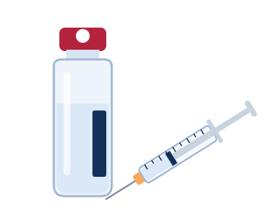
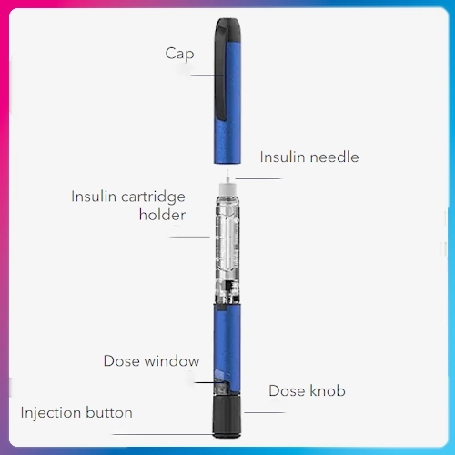
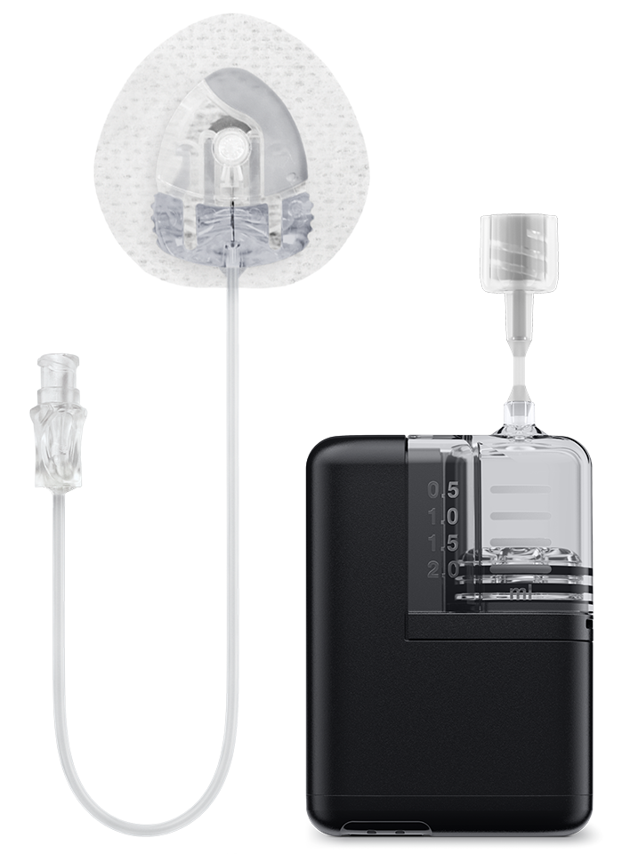

Type 1
The body makes little or no insulin, so everyone with type 1 needs to take insulin every day.
A plain-language guide for people who are newly diagnosed, and the families helping them. Compare a vial and syringe, an insulin pen and an insulin pump, then talk with your care team about which fits your life.
Compare the toolsInsulin is a hormone that lets your body move sugar from your blood into your cells for energy. With diabetes, the body either doesn’t make enough insulin or can’t use it well.
The body makes little or no insulin, so everyone with type 1 needs to take insulin every day.
The body doesn’t use insulin well. It’s managed with healthy habits, medicines, and for some people, insulin.
Develops during pregnancy. It usually goes away after birth but raises the chance of type 2 later.
Tap or click a card to flip it.

The original method: draw each dose by hand.
Tap to flip
Dial a dose and press a button.
Tap to flip
A small device that delivers insulin all day.
Tap to flip